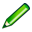

重要
翻訳は あなたが参加できる コミュニティの取り組みです。このページは現在 96.97% 翻訳されています。
17.3. ジオリファレンサ
 ジオリファレンサは、レイヤのワールドファイルを生成するためのツールです。新しい GeoTiff を作成したり、既存の画像にワールドファイルを追加することで、ラスタやベクタを地理的または投影座標系に参照付けることができます。レイヤをジオリファレンスする基本的な方法は、レイヤ上で正確に座標を決定できる点を見つけることです。
ジオリファレンサは、レイヤのワールドファイルを生成するためのツールです。新しい GeoTiff を作成したり、既存の画像にワールドファイルを追加することで、ラスタやベクタを地理的または投影座標系に参照付けることができます。レイヤをジオリファレンスする基本的な方法は、レイヤ上で正確に座標を決定できる点を見つけることです。
機能
アイコン |
目的 |
アイコン |
目的 |
|---|---|---|---|
|
ラスタを開く |
|
ベクタを開く |
|
ジオリファレンスを開始 |
||
|
GDALスクリプトを生成 |
|
GCPを読み込み |
名前を付けて保存 |
|
変換を設定 |
|
|
点を追加 |
|
点を削除 |
|
GCPを移動 |
|
パン |
|
拡大 |
|
縮小 |
|
レイヤの全領域にズーム |
|
前の領域へズーム |
|
次の表示領域にズーム |
ジオリファレンサをQGISにリンクする |
|
|
QGISをジオリファレンサにリンクする |
|
ヒストグラムをデータセット全域の値で引きのばす |
ヒストグラムを表示領域の値で引きのばす |


{kind=link}
{kind=link}
{kind=link}
表：ジオリファレンサのツール
17.3.1. 通常の手順
画像上の選択された点に対応するX、Y座標（度分秒（dd mm ss.ss）や度（dd.dd）、あるいは投影された座標（mmmm.mm））の設定手順には、 2つの選択肢があります：
ラスタ自体が、画像上に座標値のある十字が「描かれて」いる場合があります。この場合には、その座標値を手動で入力します。
すでにジオリファレンスされたレイヤを使用する方法もあります。このレイヤはベクタデータでもラスタデータでもよく、ジオリファレンスしたい画像内にある同じオブジェクト/地物が含まれており、画像に使用したい座標系を持っているものです。この場合には、QGISのマップキャンバスにロードされた参照データセット上をクリックして、座標を入力できます。
画像をジオリファレンスする通常の手順では、ラスタ上で複数の点を選択し、それらの座標を指定して、関連する変換タイプを選択します。入力パラメータと入力データに基づいて、ジオリファレンサはワールドファイルのパラメータを計算します。より多くの座標を指定するほど、より良い結果が得られるでしょう。
まず、QGISを起動し、QGISのメニューバーに表示されている をクリックします。図 17.24 に示すように、ジオリファレンサダイアログが表示されます。
以下の例では、SDGSによるサウスダコタ州の地形図を使用します。これは後でGRASSの spearfish60 のデータと一緒に可視化します。地形図は以下のリンクからダウンロードできます： https://grass.osgeo.org/sampledata/spearfish_toposheet.tar.gz

図 17.24 ジオリファレンサダイアログ
17.3.1.1. グラウンドコントロールポイント（GCP）の入力
ジオリファレンスされていないラスタのジオリファレンスを開始するには、
 ボタンを使用してそのラスタをロードする必要があります。ラスタはダイアログのメインの作業領域に表示されます。ラスタがロードされると、基準点の入力を開始できます。
ボタンを使用してそのラスタをロードする必要があります。ラスタはダイアログのメインの作業領域に表示されます。ラスタがロードされると、基準点の入力を開始できます。 点を追加 ボタンを使用して、メインの作業エリアにポイントを追加し、それらの座標を入力します（ 図 17.25 を参照）。この手順には3つの方法があります：
点を追加 ボタンを使用して、メインの作業エリアにポイントを追加し、それらの座標を入力します（ 図 17.25 を参照）。この手順には3つの方法があります：ラスタ画像内の点をクリックして、その点のCRSとともにX座標とY座標を手動で入力する。
ラスタ画像内の点をクリックし、  地図キャンバスから ボタンを押して、既にQGISのマップキャンバスに読み込まれたジオリファレンス済みの地図を使用して、X座標とY座標を追加する。CRSは自動的に設定されます。
メインマップキャンバスからGCPを入力するとき、メインキャンバスから点を選択している間、ジオリファレンスウインドウを隠すオプションがあります。
 ジオリファレンサのウィンドウを自動で隠す チェックボックスにチェックを入れると、 地図キャンバスから をクリックした後、マップキャンバスに点が追加されるまで、メインのジオリファレンスウィンドウは隠されます。地図座標の入力 ダイアログは開いたままになります。このボックスをオフにすると、マップキャンバス上で点を選択している間、両方のウィンドウが開いたままになります。このオプションはジオリファレンスウィンドウがメインインターフェイスにドッキングされていないときのみ効果があります。
ジオリファレンサのウィンドウを自動で隠す チェックボックスにチェックを入れると、 地図キャンバスから をクリックした後、マップキャンバスに点が追加されるまで、メインのジオリファレンスウィンドウは隠されます。地図座標の入力 ダイアログは開いたままになります。このボックスをオフにすると、マップキャンバス上で点を選択している間、両方のウィンドウが開いたままになります。このオプションはジオリファレンスウィンドウがメインインターフェイスにドッキングされていないときのみ効果があります。
点の入力を繰り返します。最低4点の指定が必要ですが、より多くの座標を入力すれば、より良い結果が得られます。また、関連するGCPポイントの組を適切な場所に置くために、作業領域をズームしたりパンしたりするツールもあります。
 ツールを使用すると、GCPを修正する必要がある場合に、マップキャンバスとジオリファレンスウィンドウの両方でGCPを移動させることができます。
ツールを使用すると、GCPを修正する必要がある場合に、マップキャンバスとジオリファレンスウィンドウの両方でGCPを移動させることができます。
{kind=link}

図 17.25 ラスタ画像へポイントを追加
地図に追加した点は通常、ラスタ画像と同じ場所の別個のテキストファイル（ [ファイル名].points ）に保存されます。これにより、後日ジオリファレンサを再度開いて、新しい点を追加したり既存の点を削除して結果を最適化することができます。このポイントファイルには、次のような形式の値が含まれています： mapX, mapY, pixelX, pixelY 。  GCPを読み込み ボタンと 名前を付けて保存 ボタンを使用して、ファイルの管理ができます。
GCPを読み込み ボタンと 名前を付けて保存 ボタンを使用して、ファイルの管理ができます。
17.3.1.2. 変換の設定の定義
ラスタ画像にGCPを追加したら、ジオレファレンス処理のための変換の設定を定義する必要があります。
図 17.26 ジオリファレンサの変換設定の定義
利用可能な変換アルゴリズム
入力データのタイプや品質、最終結果に入ることを許容する幾何学的な歪みの性質や量、グラウンドコントロールポイント（GCP）の数に応じて、多数の変換アルゴリズムが利用可能です。
現在、以下の 変換タイプ が利用できます：
線形 アルゴリズムはワールドファイルの作成に使用され、他のアルゴリズムとは異なり、実際にはラスタピクセルの変換は行われません。これは画像の位置合わせ（平行移動）と一様な拡大縮小は行いますが、回転やその他の変換は行いません。画像が高品質のラスタマップで、CRSは既知だが地理参照情報が不足している場合にはこのアルゴリズムが最適です。最低でも2つのGCPが必要です。
ヘルマート 変換では、回転も可能です。ラスタが高品質の大縮尺地図やオルソ画像で、CRSのグリッド方位と一致していない場合には、この変換が特に有用です。最低でも2つのGCPが必要です。
多項式1 アルゴリズムはより一般的なアフィン変換で、一様せん断変形も行います。変形後は直線は直線のまま（つまり一直線上の点は一直線上のまま）、平行な線は平行なままです。このアルゴリズムは、異なる方向に異なるグラウンドピクセルサイズでプロットされている（またはデータが取得されている）可能性のあるデータカートグラムのジオリファレンスに特に有用です。 最低でも3つのGCPが必要です。
多項式2-3 アルゴリズムは、単なるアフィン変換ではなく、より一般的な2次または3次の多項式を使用します。このアルゴリズムでは、例えばエッジが曲がっている撮影地図などにある、曲率やその他の系統的なゆがみをを考慮できます。少なくとも6つ（多項式3は10個）のGCPが必要です。角度は保存されず、局所的な縮尺は画像全体で均一にはなりません。特に、直線が曲がってしまったり、データに合わせた多項式を大きく外挿させることによって、エッジやGCPから離れた場所で大きなゆがみを生じる可能性があります。
投影変換 アルゴリズムは多項式1を別の方法で一般化したもので、画像とマップキャンバスという2つの平行でない平面間の中心射影を表現する変換ができます。直線は変換後も直線に保たれますが、平行性は保存されず、画像全体のスケールは視点の変化に一致するように変化します。この変換タイプは、高品質の地図の（垂直スキャンではなく）傾いた写真や、斜め撮影の航空写真をジオリファレンスする際に最も有用です。最低でも4つのGCPが必要です。
薄板スプライン （Thin Plate Spline）アルゴリズムは、複数のローカルな多項式を用いてラスタを「ラバーシート化」し、全体の表面曲率を最小化しながら指定されたGCPに一致させます。出力結果では、GCPから離れた領域はGCPのマッチングに合わせて移動することはありますが、局所的な変形は最小限に抑えられます。薄板スプラインは、破損した地図や変形した地図、微妙に不正確な地図、あるいはオルソ化されていない空中写真などのジオリファレンスに最も有用です。またこれは、投影タイプや投影パラメータが不明ではあるが、規則的なグリッドやアドホックなGCPの密な組み合わせを参照地図レイヤとマッチさせることのできる地図に対して、近似的なジオリファレンスや暗黙的な再投影を行う場合にも有用です。技術的には最低でも10個のGCPが必要ですが、良好な結果を得るためには通常、より多くのGCPが必要です。
薄板スプライン以外のアルゴリズムはすべて、必要最低限のGCPよりも多くのGCPが指定された場合、全体の残差誤差が最小になるようにパラメータをフィッティングします。これは、座標入力時の誤差、すなわち、ポインタのクリックや入力座標のわずかな不正確さや、その他の小さな局所的な画像変形による影響を最小限に抑えるのに役立ちます。補正するためのGCPが他にない場合、このような誤差や変形は、ジオリファレンスされた画像のエッジ付近で特に大きな歪みとなる可能性があります。ただし、GCPを必要最低数よりも多く指定した場合には、出力画像のGCPは近似的にしか一致しません。一方で、薄板スプラインは指定したGCPすべてに正確にマッチしますが、座標入力時誤差があるGCPの周辺では大きな変形が生じる可能性があります。
リサンプリング方法の定義
どのようなリサンプリング方法を選択するかは、入力データと作業の最終目的によって異なります。（線形、ヘルマート、多項式1以外の変換を使用することによる不均一な幾何学的スケーリングによる影響以外で）ラスタの統計情報を変更したくない場合には、「最近傍（Nearest neighbour）」を選択するとよいでしょう。一方で、例えば「キュービック（Cubic）」リサンプリングはほとんどの場合、より視覚的に滑らかな結果が得られます。
5つの異なるリサンプリング方法から選択できます：
最近傍（Nearest neighbour）
Bilinear (2x2 kernel)
Cubic (4x4 kernel)
Cubic B-Spline (4x4 kernel)
Lanczos (6x6 kernel)
変換の設定の定義
ジオリファレンスされた出力ラスタの作成のために、さまざまなオプションを指定する必要があります。
- ワールドファイルの作成のみ（リニア変換） のチェックボックスは、線形変換タイプを指定した場合にのみ利用可能です。これは、実際にはラスタ画像は変換されないことを意味しています。チェックを入れた場合、新しいワールドファイルが作成されるのみのため、 出力ラスタ フィールドは無効になります。
これ以外の変換タイプに対しては、 出力ラスタ を指定する必要があります。デフォルトでは、新規ファイル（[ファイル名]_modified）をオリジナルのラスタ画像ファイルと同じフォルダーに作成します。
続いて、ジオリファレンスされたラスタの 変換先CRS （座標参照系）を指定する必要があります（ 投影法の操作 参照）。
必要ならば PDFマップを作成 や PDFレポートを作成 できます。 このレポートには、使用した変換パラメータ、残差の画像、すべてのGCPとそのRMSエラーのリストといった情報が含まれています。
さらに、
解像度を設定 チェックボックスにチェックを入れると、出力ラスタのピクセル解像度を指定できます。デフォルトの水平解像度と垂直解像度は 1 です。- 必要に応じて透明に0を使用 にチェックを入れると、値0のピクセルは透明で表示されるようになります。サウスダコタ地形図の例では、余白領域がすべて透明になります。
- GCPポイントを保存 は、GCPポイントを出力ラスタの隣のファイルに保管します。
最後に、
完了後にプロジェクトに読み込む にチェックを入れると、変換が完了したときに出力ラスタをQGISのマップキャンバスに自動的に読み込みます。
17.3.1.3. ラスタプロパティの表示と調整
設定 メニューの ラスタプロパティ オプションをクリックすると、ジオリファレンスしようとしているラスタファイルの レイヤプロパティ ダイアログが開きます。
17.3.1.4. ジオリファレンサの構成
（またはキーボードショートカット Ctrl+P ）でジオリファレンサの動作をカスタマイズできます。
点のTip の下にあるチェックボックスを使って、ジオリファレンサウィンドウとメインマップキャンバスの両方にGCP IDとX/Y座標を表示するかどうかを切り替えることができます。
残差単位 は、残差単位をピクセルで与えるか、マップの単位で与えるかを制御します
PDFレポート では、レポート出力のマージン幅をmm単位で設定できます
PDF地図 では、マップ出力に使う用紙サイズを選ぶことができます
最後に、
ジオリファレンサウィンドウを結合して表示 を有効にすることができます。これはジオリファレンサウィンドウを、最小化できる別のウィンドウとして表示するのではなく、QGISのメインウィンドウにドッキングさせます。
17.3.1.5. 変換の実行
すべてのGCPを設定しすべての変換設定が定義されたら、  ジオリファレンスを開始 ボタンを押すと、新しいジオリファレンスされたラスタが作成されます。
ジオリファレンスを開始 ボタンを押すと、新しいジオリファレンスされたラスタが作成されます。